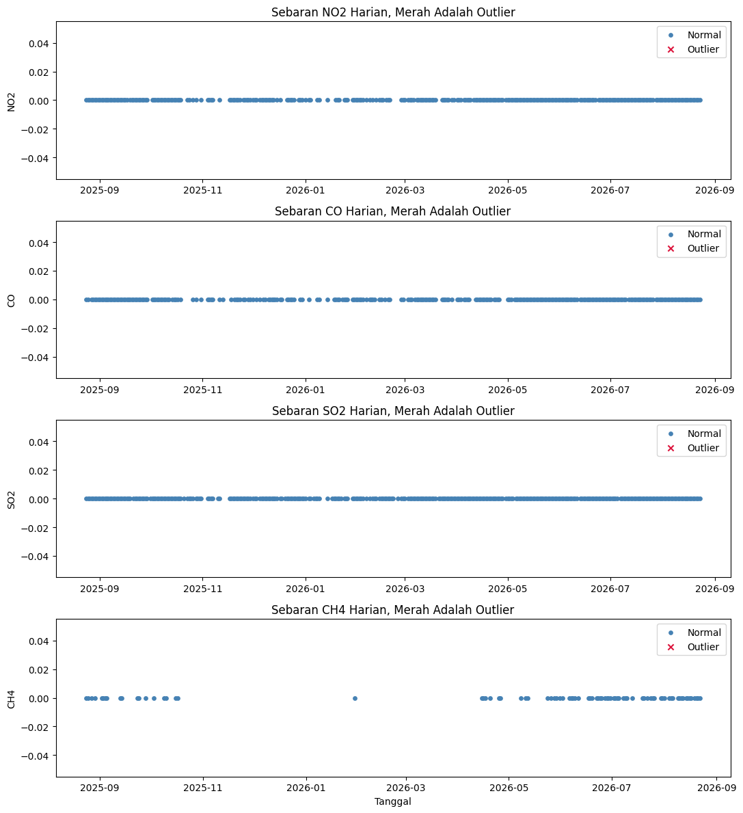
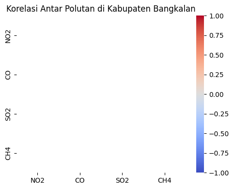

Eksplorasi Data - Kabupaten Bangkalan#
Eksplorasi Data adalah tahap untuk melihat, memvisualisasikan, dan memeriksa kualitas data yang telah diperoleh pada tahap Data Understanding, sebelum data diolah lebih lanjut pada tahap analisis utama. Bagian ini mencakup peta interaktif wilayah, statistik deskriptif, pemeriksaan missing values, dan deteksi outlier awal.
1. Peta Interaktif Wilayah Bangkalan#
Peta berikut menampilkan bounding box AOI, titik pusat, serta beberapa titik acuan kontekstual, yaitu akses Suramadu dan area pesisir Klampis, yang relevan sebagai potensi sumber emisi. Peta mendukung dua basemap, yaitu peta jalan dan citra satelit, yang dapat dipilih melalui kontrol layer di kanan atas peta.
2. Memuat Data Hasil Ekstraksi#
NO2: 292 baris, dari 2025-08-24 sampai 2026-08-23
CO: 275 baris, dari 2025-08-24 sampai 2026-08-23
SO2: 322 baris, dari 2025-08-24 sampai 2026-08-23
CH4: 82 baris, dari 2025-08-24 sampai 2026-08-22
3. Statistik Deskriptif#
Statistik deskriptif memberikan gambaran umum sebaran nilai tiap polutan, seperti nilai rata rata, nilai minimum, nilai maksimum, dan sebaran kuartil.
| polutan | jumlah_data | rata_rata | std | minimum | maksimum | |
|---|---|---|---|---|---|---|
| 0 | NO2 | 292 | 0.0 | 0.0 | 0.0 | 0.0 |
| 1 | CO | 275 | 0.0 | 0.0 | 0.0 | 0.0 |
| 2 | SO2 | 322 | 0.0 | 0.0 | 0.0 | 0.0 |
| 3 | CH4 | 82 | 0.0 | 0.0 | 0.0 | 0.0 |
4. Pemeriksaan Missing Values#
Pemeriksaan dilakukan dengan melengkapi deret waktu agar memiliki baris untuk setiap hari dalam rentang tanggal, karena sebagian hari mungkin tidak memiliki data sama sekali, misalnya akibat tutupan awan atau tidak adanya lintasan satelit pada hari tersebut.
NO2: 73 dari 365 hari kosong (20.0 persen)
CO: 90 dari 365 hari kosong (24.7 persen)
SO2: 43 dari 365 hari kosong (11.8 persen)
CH4: 282 dari 364 hari kosong (77.5 persen)
Pola dan besaran missing values ini menjadi catatan penting yang akan ditangani, misalnya dengan interpolasi berbasis waktu, sebelum data dipakai pada notebook analisis utama.
5. Deteksi Outlier Awal#
Deteksi outlier awal dilakukan menggunakan algoritma Isolation Forest
dengan contamination=0.05, artinya diperkirakan sekitar 5 persen dari
data adalah outlier. Baris dengan nilai kosong dibuang terlebih dahulu
(dropna) agar tidak mengganggu proses pemodelan.
NO2: 0 outlier dari 292 data valid
CO: 0 outlier dari 275 data valid
SO2: 0 outlier dari 322 data valid
CH4: 0 outlier dari 82 data valid

6. Korelasi Antar Polutan#
Sebagai eksplorasi tambahan, korelasi antar polutan dapat memberi gambaran apakah polutan tertentu cenderung naik atau turun bersamaan, yang dapat mengindikasikan sumber emisi yang berkaitan.

7. Temuan Sementara#
Beberapa hal yang perlu diperhatikan berdasarkan eksplorasi di atas, akan terisi secara otomatis dengan angka sebenarnya begitu data hasil ekstraksi tersedia:
Proporsi missing values pada tiap polutan, sebagai dasar penentuan metode penanganan yang tepat pada tahap berikutnya.
Jumlah dan sebaran waktu titik outlier pada tiap polutan, sebagai dasar penyelidikan lebih lanjut, apakah outlier tersebut mencerminkan kejadian nyata atau gangguan data.
Pola korelasi antar polutan, sebagai dasar dugaan awal mengenai keterkaitan sumber emisi, misalnya NO2 dan CO yang sama sama berasal dari transportasi.
8. Kesimpulan#
Eksplorasi data menunjukkan bahwa data hasil ekstraksi Sentinel-5P untuk
Kabupaten Bangkalan sudah berada dalam struktur yang siap diolah, yaitu
deret waktu harian per polutan dengan rentang tanggal yang jelas. Peta
interaktif memastikan bahwa cakupan wilayah AOI sudah sesuai dengan
konteks yang ingin dipantau, termasuk titik titik dengan potensi sumber
emisi seperti akses Suramadu dan pesisir Klampis. Pemeriksaan missing
values dan deteksi outlier awal pada bagian ini menjadi dasar bagi
penanganan data yang lebih menyeluruh, seperti interpolasi nilai kosong
dan investigasi outlier, yang akan dilakukan pada notebook
2-analisis-bangkalan.ipynb.